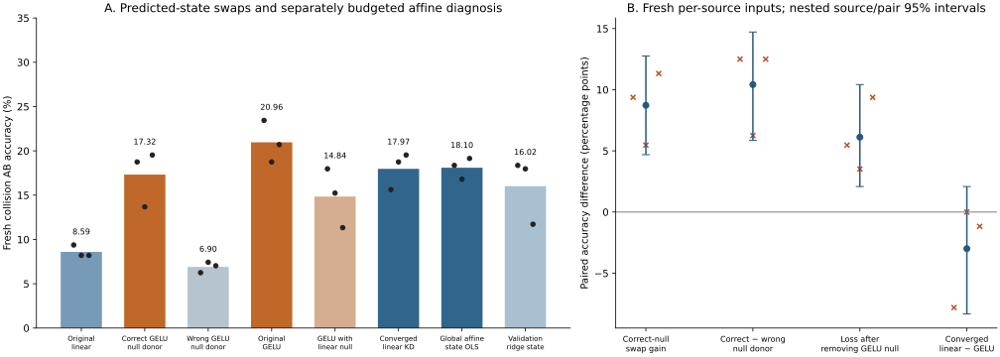

预测零空间分量的替换支持一条局部功能路径；充分拟合显著缩小原线性与 GELU 的复合差距，提示优化／数值条件影响。GELU 的状态拟合仍更好，但剩余复合准确率差尚不明确，不能把主收益全部归因于线性表达限制。
保留上一轮 12 个同预算模型及报告。本轮重用三个冻结来源，完成 6 个正确／错配充分拟合诊断，每个保存 OLS、原 KD＋几何凸优化和单步验证选择的 ridge 状态解，共 18 个线性诊断解。参数化与额外求解预算不同，不能当作另一轮同预算比较。

| 条件 | 旧碰撞 AB | 新碰撞 AB | 新配对双正确 | 新单步 A |
|---|---|---|---|---|
| 原同预算线性正确 | 8.46% | 8.59% | 0.26% | 100.00% |
| 线性读出分量＋正确 GELU 零空间 | 18.75% | 17.32% | 3.12% | 100.00% |
| 线性读出分量＋错配 GELU 零空间 | 7.42% | 6.90% | 0.00% | 100.00% |
| 原同预算 GELU 正确 | 23.31% | 20.96% | 3.65% | 100.00% |
| GELU 读出分量＋线性零空间 | 12.24% | 14.84% | 1.82% | 100.00% |
| 充分拟合线性：原 KD＋几何目标 | 21.09% | 17.97% | 3.91% | 99.61% |
| 线性状态 MSE 全局最小解 | 20.05% | 18.10% | 3.39% | 98.96% |
| 单步验证选择的正则状态线性解 | 16.67% | 16.02% | 2.86% | 99.35% |
零空间替换只使用两个模型自己的预测：同一坐标系中的读出分量来自受体，零空间来自供体；没有真实中间状态参与替换。全部第一步 logits 的最大变化为 1.1e-13，softmax 概率最大变化为 1.54e-14，分类全部保持。正确供体带来新输入上的 +8.72 [+4.69, +12.76] pp；错配供体增量为 -1.69 [-4.30, +0.78] pp。反向替换正确 GELU 的零空间后，成绩降低 +6.12 [+2.08, +10.42] pp。
| 条件 | 总状态 NMSE | 零空间 NMSE | 读出方向 NMSE | 下游零空间误差 | 下游总误差 | 零空间越过正确间隔 |
|---|---|---|---|---|---|---|
| 原同预算线性正确 | 0.05116 | 0.02070 | 0.03046 | 0.56612 | 0.97084 | 72.84% |
| 原同预算 GELU 正确 | 0.01747 | 0.01083 | 0.00664 | 0.31590 | 0.51570 | 63.40% |
| 充分拟合线性：原 KD＋几何目标 | 0.03395 | 0.01064 | 0.02332 | 0.36392 | 0.65190 | 68.64% |
| 线性状态 MSE 全局最小解 | 0.02150 | 0.01064 | 0.01086 | 0.36392 | 0.60596 | 68.64% |
这里 e=预测第一状态−真实第一状态，d_null=e P_null B Wᵀ。下游误差先去除每行共同 logit 平移，再以真实中间状态经 B 的输出分数能量归一化。真实中间状态仅用于诊断。总下游平方误差包含读出与零空间分量的交叉项，不能把两个能量直接解释成贡献百分比。充分拟合线性与 GELU 的零空间总 NMSE接近，GELU 的下游误差和间隔越过率更低，说明误差方向也需考虑。
| 预定诊断 | 新测试均值 [描述性 95% 区间] pp |
|---|---|
| 充分拟合线性 − GELU | -2.99 [-8.33, +2.08] |
| OLS 状态线性 − GELU | -2.86 [-6.90, +1.17] |
| 验证选择的 ridge 状态线性 − GELU | -4.95 [-10.03, +0.26] |
| 补充事后对比 | 新测试均值 [描述性 95% 区间] pp |
|---|---|
| optimized_linear_correct_minus_wrong | +9.64 [+5.73, +13.15] |
| nonlinear_correct_minus_wrong | +13.67 [+9.77, +17.84] |
| remaining_nonlinear_relation_interaction | +4.04 [-0.78, +8.59] |
| optimization_gain_correct | +9.38 [+5.34, +13.41] |
| optimization_gain_wrong | -1.04 [-4.69, +2.99] |
| recovered_relation_advantage | +10.42 [+5.86, +14.71] |
| 正确组 | 单步训练 NMSE | 单步验证 NMSE |
|---|---|---|
| linear_correct | 0.04541 | 0.04704 |
| nonlinear_correct | 0.01210 | 0.01489 |
| state_ols | 0.01515 | 0.01892 |
| convex_kd_geometry | 0.02505 | 0.02896 |
| validation_ridge_state | 0.01826 | 0.02146 |
OLS 给出这批训练样本上无约束仿射族的最小状态平方误差，GELU 在训练和验证上仍有更低的状态误差。这是当前数据／表征下的拟合差距；不能据此断言所有线性关系推断理论上不可能。凸优化拟合原始 KD＋几何的数据目标，读出零空间由 OLS精确解出，读出行空间使用白化后的双精度 L-BFGS。未复制因子化 AdamW 的参数衰减；参数化、精度及预算变化都可能有作用。复合结果的区间跨零不能作为两个方法等价的检验。
| 源 | 配对 | 特征条件数 | L-BFGS 迭代 | 训练最优性 gap 上界 | 验证选 ridge λ | 充分拟合系数范数 |
|---|---|---|---|---|---|---|
| 0 | correct | 2.2e+08 | 213 | 5.4e-13 | 0.0 | 2.06e+06 |
| 0 | wrong | 2.2e+08 | 191 | 3.79e-13 | 0.01 | 2.43e+06 |
| 1 | correct | 1.32e+08 | 197 | 8.18e-13 | 1e-10 | 1.52e+06 |
| 1 | wrong | 1.32e+08 | 173 | 7.65e-13 | 0.01 | 1.5e+06 |
| 2 | correct | 1.08e+08 | 212 | 6.06e-13 | 0.0001 | 7.57e+05 |
| 2 | wrong | 1.08e+08 | 194 | 1.12e-12 | 0.01 | 1.33e+06 |
六个凸解均通过预定的训练最优性误差上界，独立解析梯度复算也通过。条件数约 10⁸，无正则解系数达到 10⁶，可能利用浮点舍入产生的近 LayerNorm 约束方向，因此单独保留正则化与推断精度检查，不把无正则解当作稳健部署方案。
| 测试 | 正确线性解 | float64 复合 | float32 复合 |
|---|---|---|---|
| existing | state_ols | 20.05% | 19.92% |
| existing | convex_kd_geometry | 21.09% | 21.35% |
| existing | validation_ridge_state | 16.67% | 16.54% |
| fresh | state_ols | 18.10% | 18.49% |
| fresh | convex_kd_geometry | 17.97% | 18.36% |
| fresh | validation_ridge_state | 16.02% | 15.89% |
每源新测试包含 128 个 IID 输入、128 对碰撞样本，共 384 个整组轨道；三个新测试共 1,152 个不同轨道。每个模型的新输入排除其来源、适应训练、验证轨道，以及三轮历史测试。新输入可以是另一个源的训练输入，因此是相对被评估模型的留出。冻结来源重用，不是新来源复现。所有线性拟合只使用旧单步训练和验证信息，完整结束后才打开新复合测试；本轮不再根据复合结果调参。
零空间仅针对固定第一步的全部线性 logits，不排除更广义的答案信息；混合表征也可能不在编码器流形上。这些干预说明当前复合计算对该分量敏感，不证明网络自发发现代数关系。旧测试使用配对的交叉源／样本 bootstrap，新测试按源独立样本分层重采样；三个复用源的区间均仅用于描述。
6,594 项独立检查通过；原 83 项父研究产物哈希保持；测试记录：........................................................................ [ 42%] ........................................................................ [ 84%] ........................... [100%] 171 passed in 5.07s。